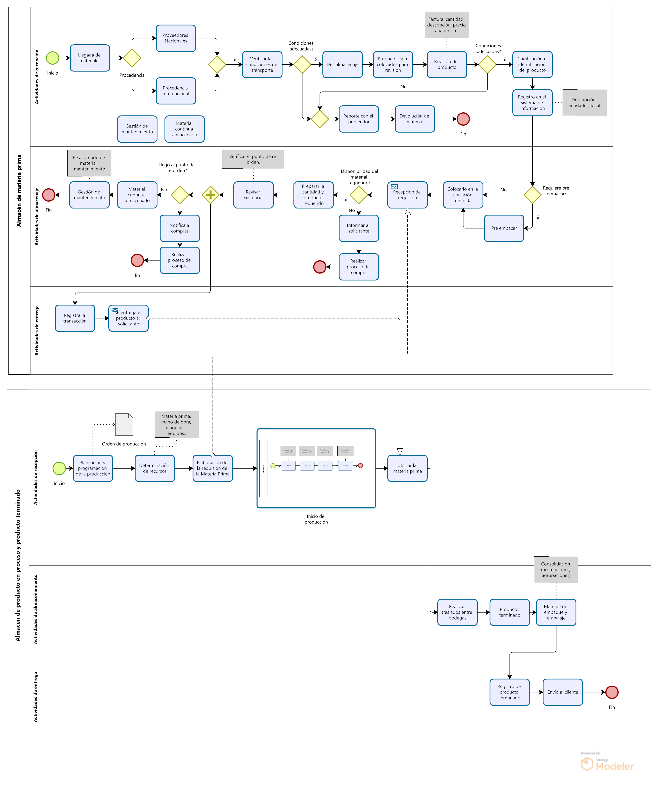

Situación
Como parte de mi desarrollo profesional en la mejora de procesos, analicé un modelo operativo estándar para la recepción, almacenamiento y despacho de materia prima. Durante la evaluación del diagrama de flujo inicial, identifiqué fallas lógicas críticas en el diseño: el control de inventarios (revisión del punto de reorden) bloqueaba secuencialmente la entrega de productos que ya habían sido alistados, lo que en un entorno logístico real generaría cuellos de botella y retrasos innecesarios en la atención al solicitante.
Tarea
El objetivo fue rediseñar y optimizar el diagrama utilizando el software Bizagi Modeler bajo el estándar internacional BPMN 2.0. La meta era lograr un modelo que reflejara fielmente la realidad operativa de un almacén eficiente: garantizar que el despacho de pedidos fluya sin interrupciones, manteniendo al mismo tiempo un control estricto y concurrente sobre los niveles de inventario y la gestión de mantenimiento.
Acción
Para resolver la ineficiencia operativa detectada, apliqué las siguientes mejoras arquitectónicas al modelo en Bizagi:
- Reestructuración Lógica mediante Compuerta Paralela (+): Separé el flujo de entrega física del producto del flujo administrativo de revisión de inventario. Esto asegura cero retrasos en el despacho, permitiendo que la notificación a compras ocurra de manera concurrente.
- Estandarización de Nomenclatura BPMN: Corregí las actividades del diagrama para que cumplieran estrictamente con las reglas de notación, transformando sustantivos ambiguos en tareas accionables claras (ej. cambiar "Transacciones inter bodegas" por "Registrar traslado entre bodegas").
- Integración del Flujo de Mantenimiento: Reubiqué las tareas de "Material continúa almacenado" y "Gestión de mantenimiento" al final de la rama lógica donde el stock no requiere reabastecimiento, reflejando correctamente las operaciones rutinarias del almacén sin interferir en el despacho.
Resultado
El resultado es un modelo BPMN altamente optimizado, limpio y fácil de interpretar. Este nuevo diseño documenta un proceso logístico ágil donde las entregas se realizan de manera ininterrumpida y las alertas de reabastecimiento se gestionan en paralelo, previniendo quiebres de stock. Este proyecto demuestra mi capacidad para auditar flujos de trabajo, identificar ineficiencias operativas y aplicar soluciones técnicas estandarizadas para la cadena de suministro.
Diagrama Optimizado en Bizagi
